04 NACA 0012 and Clark Y airfoils#
Step 1: NACA 0012 and Clark Y sections#
Prompt
Build OpenSG 2-D solid cross-sections of a NACA 0012 and a Clark Y airfoil, 1 m chord, reference axis at the quarter chord. Skin: glass/epoxy [±45/0]s, 0.5 mm plies. Spar caps: 6 mm carbon/epoxy (0°) on top and bottom between two webs at x/c 0.15 and 0.50. Webs: glass [±45] faces of 1 mm on a 10 mm foam core. Use typical wind-blade glass, carbon and foam properties with densities. Show the meshes.
CompositesAI

NACA 0012 2-D solid mesh#

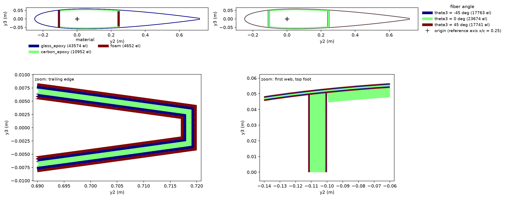
NACA 0012 material section#

Clark Y 2-D solid mesh#

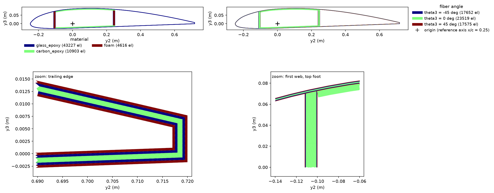
Clark Y material section#
Built and checked both OpenSG 2-D solid cross-sections; meshes and YAML models are attached.
Assumptions
SI units; chord = 1.000 m; reference axis = x/c = 0.25.
Glass/epoxy: \(E_1/E_2=41/14\) GPa, density 1940 kg/m³.
Carbon/epoxy: \(E_1/E_2=135/9\) GPa, density 1600 kg/m³.
Foam: \(E=100\) MPa, density 100 kg/m³.
Skin: glass/epoxy [+45/−45/0]s, 0.5 mm per ply (3 mm total).
Caps: additional 6 mm carbon/epoxy 0°. Clark Y cap bounds were extended by 1 mm to x/c 0.149–0.501 for a robust web-cap mesh junction.
Webs: [+45/−45]/10 mm foam/[−45/+45], with 1 mm glass face thickness each.
A structural trailing-edge cutoff at x/c = 0.97 was used to avoid an unphysical solid overlap at the thin trailing edge.
Section |
Mesh elements |
Area |
Mass/length |
|---|---|---|---|
NACA 0012 |
59,178 |
0.012385 m² |
19.141 kg/m |
Clark Y |
58,746 |
0.012390 m² |
19.182 kg/m |
Both meshes passed geometry, material-density, element-orientation, and positive-area checks.
OpenSG model files
NACA 0012 YAML model
Clark Y YAML model
Step 2: Timoshenko stiffness and mass matrices#
Prompt
Homogenize both sections with OpenSG’s solid beam model. Give the Timoshenko 6×6 stiffness and the 6×6 mass matrix of each.
CompositesAI

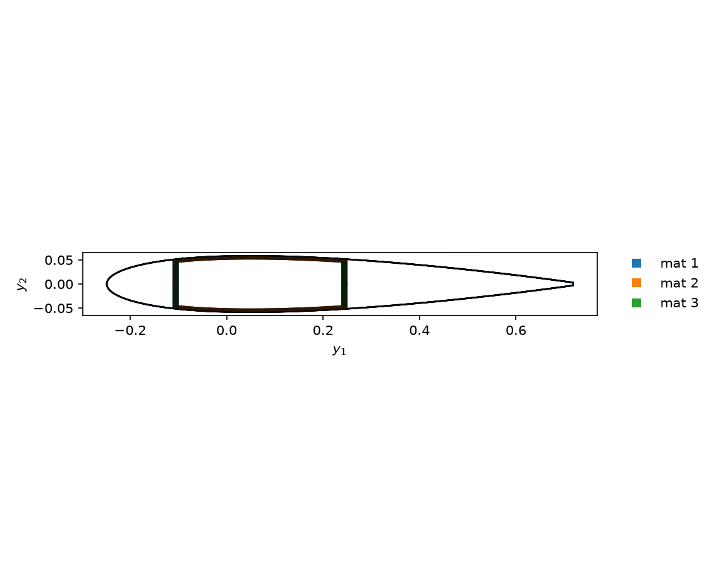
NACA 0012 solid-beam mesh#

Clark Y solid-beam mesh#
Homogenization completed with OpenSG’s Timoshenko solid-beam model. Matrices are about the quarter-chord reference axis.
Order: \([e_{11},\gamma_{12},\gamma_{13},\kappa_1,\kappa_2,\kappa_3]\) and \([F_1,F_2,F_3,M_1,M_2,M_3]\); SI units.
NACA 0012
Mass per length: 19.141 kg/m.
Clark Y
Mass per length: 19.182 kg/m.
Both stiffness matrices are symmetric and positive definite. The attached NACA 0012 beam-law report and Clark Y beam-law report include full-precision matrices, compliance matrices, and derived section centers.
Download NACA 0012 beam-law report
Download Clark Y beam-law report
Step 3: Mesh convergence of the diagonal stiffness terms#
Prompt
Run a mesh convergence study of this homogenization for both sections, and plot each diagonal stiffness term against the mesh refinement.
CompositesAI

NACA 0012 coarse mesh#

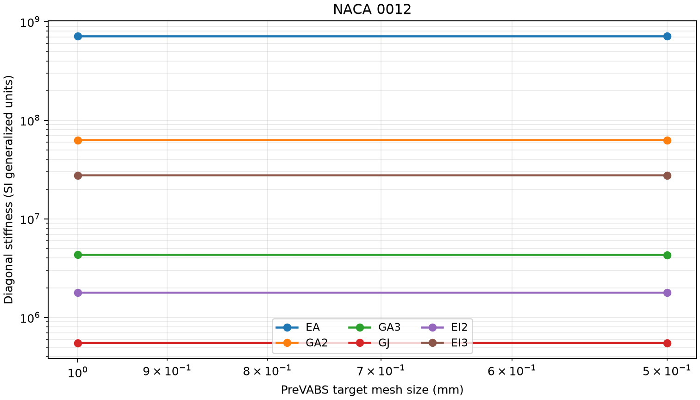
NACA 0012 diagonal-stiffness convergence#

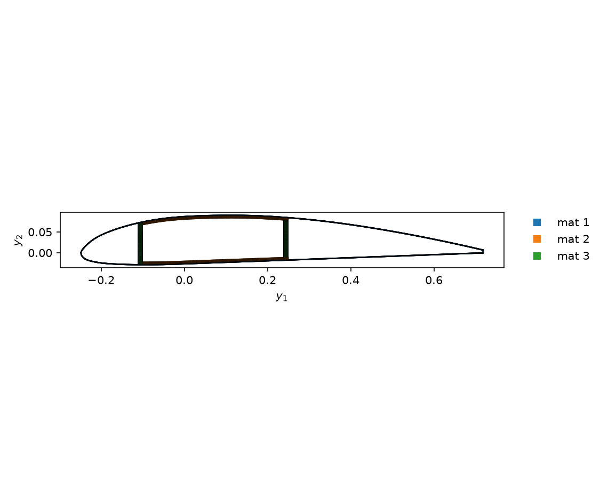
Clark Y coarse mesh#

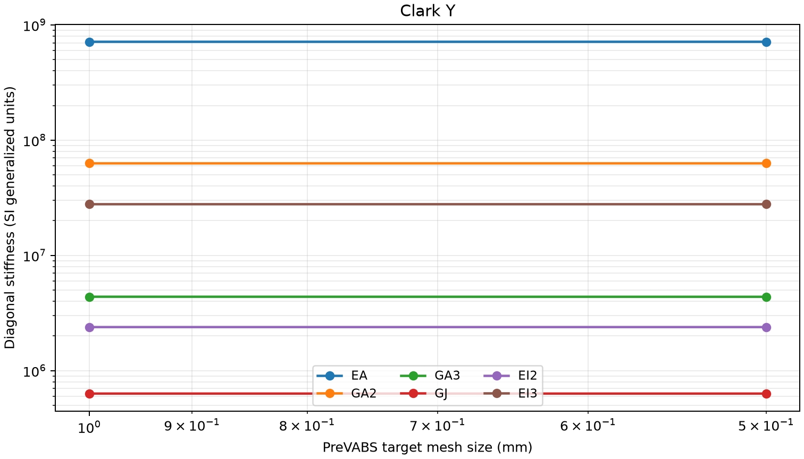
Clark Y diagonal-stiffness convergence#
Mesh convergence is strong for both solid-beam models: all six diagonal stiffness terms change by less than 0.13% from the 1.0 mm to 0.5 mm mesh.
Section |
Meshes compared |
Largest change |
|---|---|---|
NACA 0012 |
59,178 → 143,650 elements |
GA3: −0.095% |
Clark Y |
58,746 → 140,304 elements |
GA3: −0.125% |
Term |
NACA 0012 change |
Clark Y change |
|---|---|---|
EA |
−0.000% |
−0.000% |
GA2 |
−0.007% |
−0.006% |
GA3 |
−0.095% |
−0.125% |
GJ |
−0.027% |
−0.028% |
EI2 |
−0.001% |
−0.001% |
EI3 |
−0.001% |
−0.001% |
The attached plots show each diagonal Timoshenko stiffness term versus mesh target size. The Mesh-convergence report provides the corresponding SI values.
Download the mesh-convergence report
Step 4: Local fields under the root reaction#
Prompt
Recover the local fields in both sections under a beam reaction force: the root reaction of a 10 m cantilever with a 1 kN flapwise tip force, F3 = 1 kN and M2 = 10 kN·m about the quarter-chord axis. Show all 15 contour plots for each section, the six stresses, the six strains and the three displacements, with a rainbow colour bar, and publish them.
CompositesAI

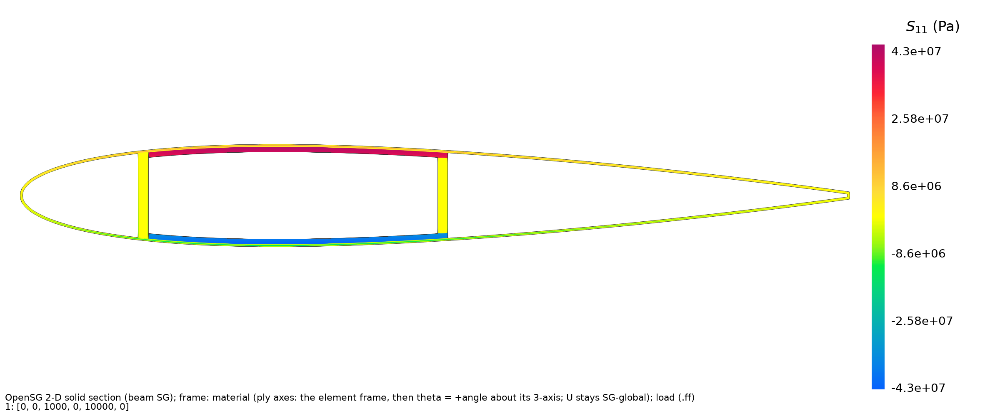
naca0012 Sig xx contour#

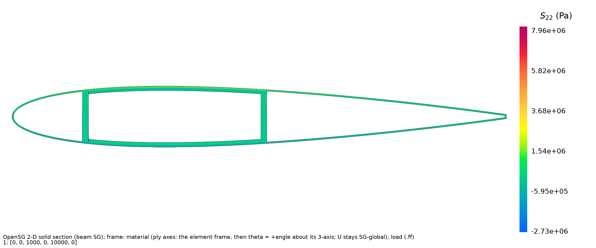
naca0012 Sig yy contour#

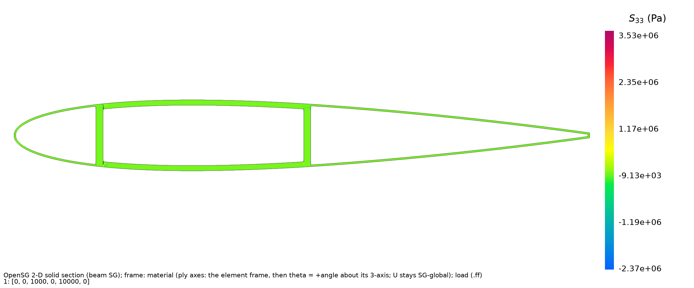
naca0012 Sig zz contour#

naca0012 Sig yz contour#

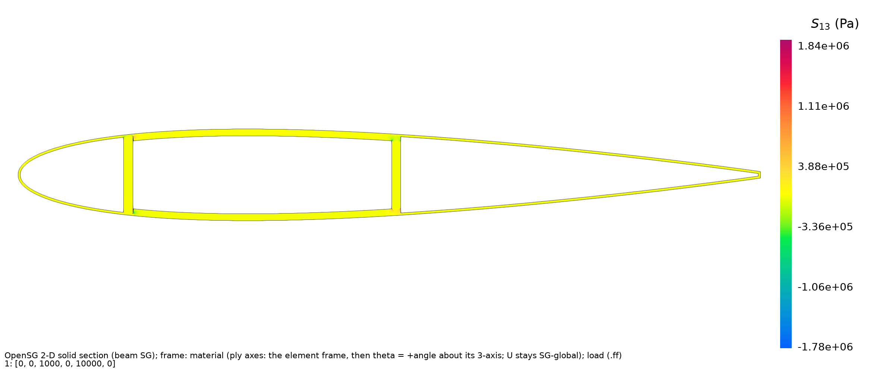
naca0012 Sig xz contour#

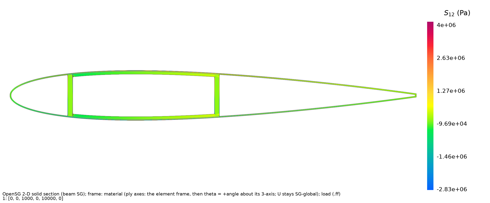
naca0012 Sig xy contour#

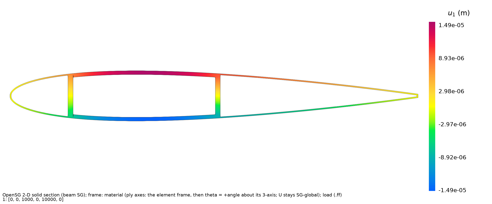
naca0012 U1 contour#

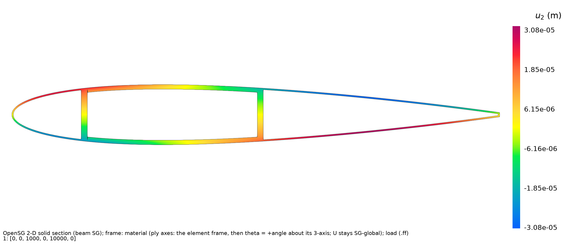
naca0012 U2 contour#

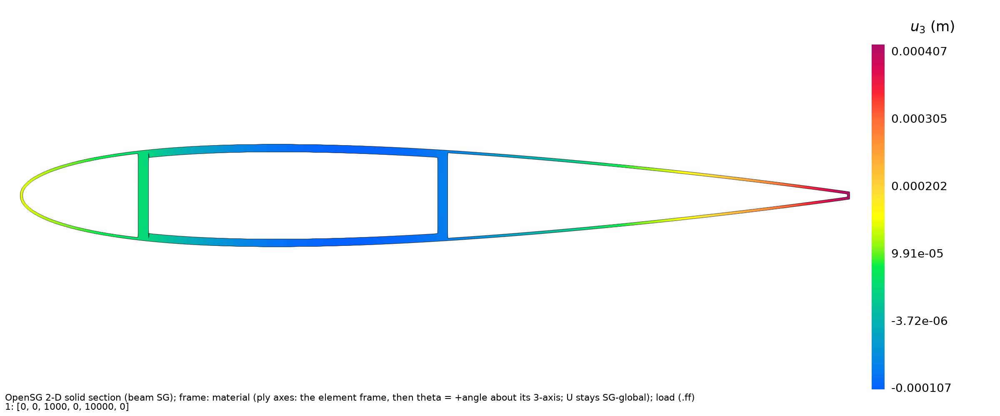
naca0012 U3 contour#

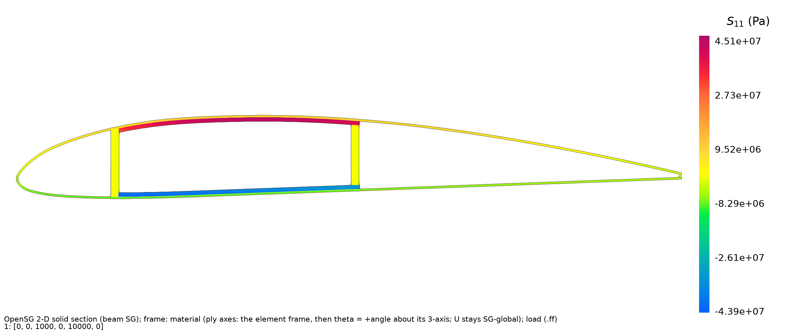
clarky Sig xx contour#

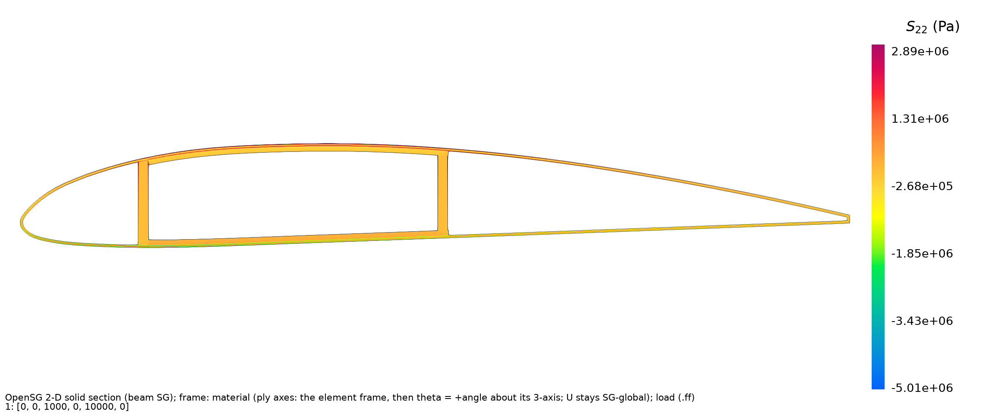
clarky Sig yy contour#

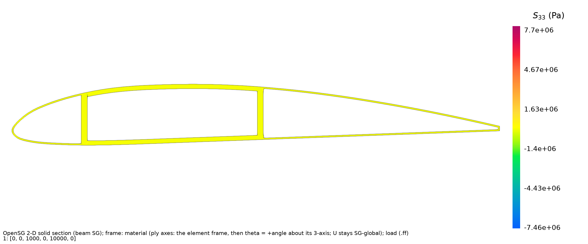
clarky Sig zz contour#

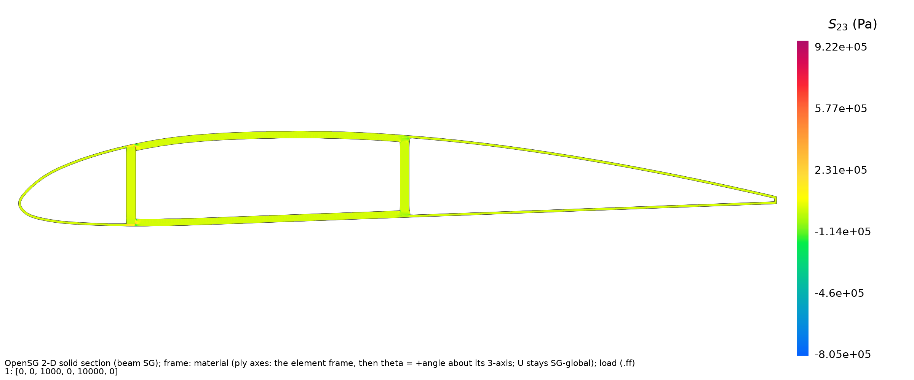
clarky Sig yz contour#

clarky Sig xz contour#

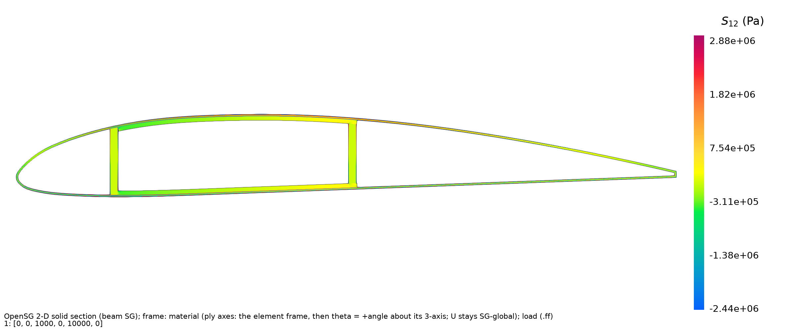
clarky Sig xy contour#

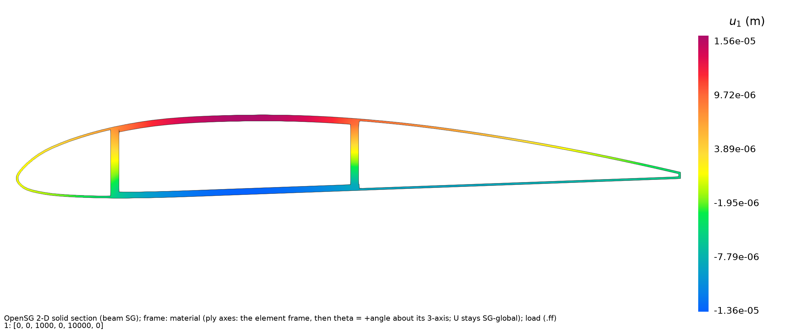
clarky U1 contour#

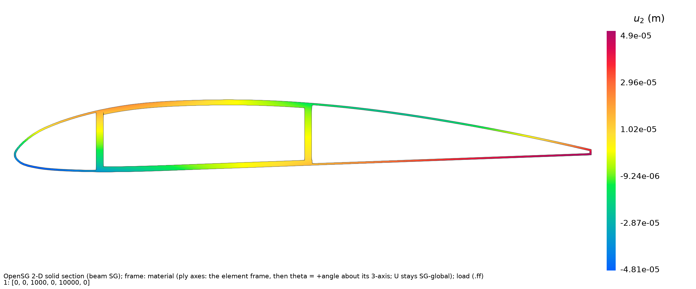
clarky U2 contour#

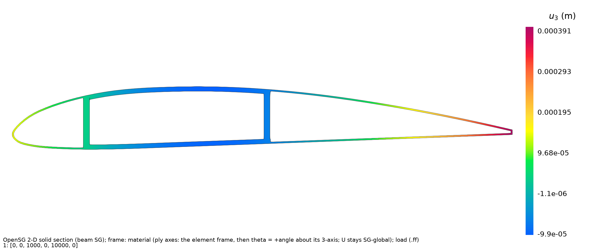
clarky U3 contour#
Local-field recovery completed for the converged meshes under:
\(F_3=+1{,}000\) N
\(M_2=+10{,}000\) N·m
Reference: quarter-chord axis
All 30 rainbow contour plots are published: six stresses, six strains, and three displacements for each section. Stress bars are in Pa, strain is dimensionless, and displacement is in m. Stresses and strains are in the local material axes; displacements remain in section axes.
Section |
Recovered \(F_3\) |
Recovered \(M_2\) |
Resultant check |
|---|---|---|---|
NACA 0012 |
1000.000 N |
9999.99996 N·m |
Passed |
Clark Y |
999.999999 N |
10000.00120 N·m |
Passed |
Peak axial local stress \(S_{11}\):
NACA 0012: +42.99 MPa / −42.98 MPa
Clark Y: +45.14 MPa / −43.91 MPa
Published field files are named naca0012_root_Sig_*.png, naca0012_root_Eps_*.png, naca0012_root_U*.png, with corresponding clarky_root_*.png files.